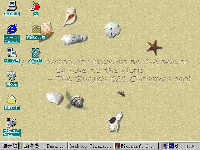

假如我们能将Win9X的桌面装扮成一个金黄色的海滩，然后再养上几只螃蟹、海鸟会是什么样子呢？安装Desktop Pizazz 之后你就会看到这个让人耳目一新的画面。
Desktop
Pizazz是一个有趣的桌面管理软件，它除可利用自身附带的特殊桌面壁纸取代Win9X原有的桌面壁纸之外，还可以为桌面添加一些“活动”部位（如：爬来爬去的小螃蟹、穿梭不停的海鸟等），从而使得Win9X的桌面“活”了起来，让你仿佛置身于大自然，获得全新的感觉。另外，Desktop
Pizazz还具有在桌面上动态显示有关文字谚语以及隐藏桌面图标等辅助功能。
安装Desktop Pizazz之后，它会随同Win9X自动运行，并使用自己特定的桌面主题代替原Win9X“陈旧”的桌面主题，并同时将有关“活动”的桌面组件（如螃蟹、海鸟等）显示到桌面上，让它们在桌面上“自由活动”，使得整个屏幕充满了生机。另外，Desktop Pizazz还会自动在桌面上显示有关文字谚语。例图即为本人安装Desktop Pizazz之后的桌面显示状况，沙滩、贝壳、海星、海鸟、螃蟹等一应俱全，其中海鸟和螃蟹都是“活”的，它们自己动来动去，其效果比起以往毫无生气的桌面来说有天壤之别。
当然，Desktop Pizazz的缺省运行状态不一定能满足用户的需要，此时我们就可以双击Win9X系统托盘（即任务栏最右边显示系统时钟的区域）中的Desktop Pizazz图标，打开“Desktop Pizazz Properties”设置框，然后按照自己的要求对其有关运行状况进行适当的调整。如我们可利用“Themes”选项卡选择“活动”桌面的背景（非注册用户仅能使用其中的一种背景，即我们所看到的海滩背景）；利用“Filter”选项卡可为Desktop Pizazz设置密码；利用“Quotes”选项卡选择文字谚语的内容及定时更换的方式；以及利用“Options”选项卡对Desktop Pizazz的有关运行选项（如是否自动启动、是否隐藏桌面图标、桌面主题的图片大小等）进行设置，其操作都比较简单，可以自己去试用。
作为新一代的Win9X桌面管理软件，Desktop Pizazz的出现确实给人以耳目一新的感觉，它为我们带来了更广阔的桌面天地，想尝新的用户赶快到http:∥wwwNatureBoySoftwarecom下载一个试试吧！
(湖北 胡锦承) |